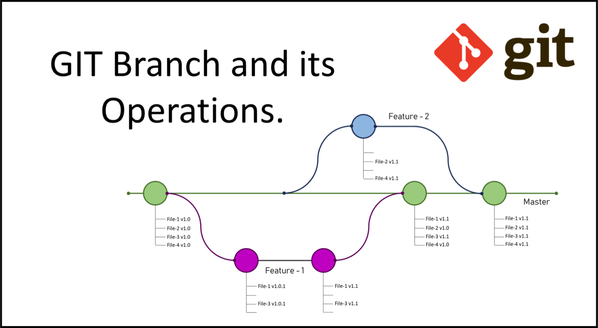
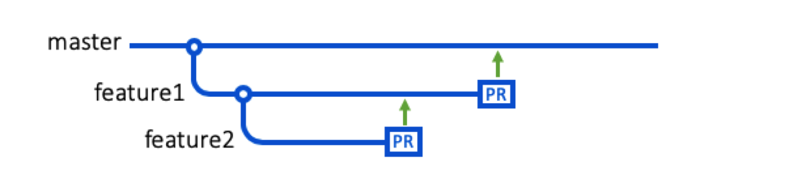
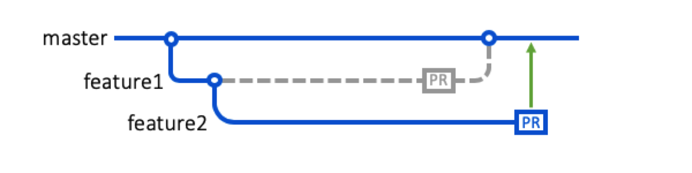

GEOG 5160/6160: Introduction to git and GitHub: part 2
Introduction
In this lab, we’ll work with branches in git and GitHub. Before introducing these, you’ll need to make sure you have a GitHub account setup and have created a repository called myrepo. We covered this in the first of these labs, but if you have not already set this up, the following section will explain how to do this. If you have, feel free to skip ahead to Working with branches in git
Connect to GitHub
In this section, we will walk through the steps of connecting to GitHub for the first time, and both pulling from and pushing to GitHub from your computer. Before doing anything else, make a new folder on your computer where you can store the files for these labs. I’d suggest making this on your desktop and calling it github. Make a note of where this is, and then go to your terminal and change to this directory. Note that in a terminal:
pwdprints the current directorycdchanges the directorycdwill go to your home directorycd ..will go up one levelcd /path/to/my/fileswill change to whatever path you have listed
lswill print a list of the files in the current directory
Under Windows, you can change to a desktop folder by typing:
cd /c/User/USERNAME/Desktop/githubUnder Mac OSX, you can change to a desktop folder by typing:
cd /Users/USERNAME/Desktop/githubUnder Linux:
cd /home/USERNAME/Desktop/githubMake a repo on GitHub
Go to https://github.com and make sure you are logged in to your account. Click on [Repositories], then click the green [New] button.
This will open a form with several options. Enter the following:
- Repository name:
myrepo(or whatever name you will easily remember). - Description: “
setup test” (or something else, but it is good to get into practice of writing something descriptive in the README). - Public.
YES - Initialize this repository with a README.
- For everything else, just accept the default.
Click button [Create repository.]
This has created the remote copy of your repository. We now need to link this to a local copy on your computer. Click the green button [Code], and copy the HTTPS URL (if you click on the little clipboard icon this will get copied to your clipboard).
Once you have changed directory to where you want the local files saved, make a clone of your repository by typing the following into the terminal:
git clone https://github.com/USERNAME/REPOSITORY.gitReplace the https:// address with the URL copied from GitHub. git will now make a new directory with the name of your repository and copy all files from GitHub to this directory. You should see something similar to the following output if this has been successful:
Cloning into 'myrepo'...
remote: Enumerating objects: 3, done.
remote: Counting objects: 100% (3/3), done.
remote: Total 3 (delta 0), reused 0 (delta 0), pack-reused 0
Receiving objects: 100% (3/3), done.This will create a new folder with the name of the repository (myrepo). Change directory now and take a look at its contents.
cd myrepo
ls
head README.mdThe head command will show you the first few lines of the README file. This is a markdown file and is used as the default landing page for your repository. Although we’ve just downloaded this, so know where it is linked to, we can check the address of the remote repository as follows:
git remote show originAnother very useful command is git status, which provides a summary of the current repository, including
- Which branch you are working on (more on this later)
- Whether or not files are being tracked (i.e. monitored for changes by git)
- Whether files are in sync with the remote repository
Working with branches in git
Branches allow you to make parallel copies of your code for development. This is particularly useful as your code starts to become more mature or if you are collaborating on a project. For example, you can have one branch that contains the current stable, working version, and a second for development. As any changes to the development branch do not affect the working version, then you can safely experiment with your code. If these changes improve the stable version, you can then merge them back to that original branch. If they do not, then you can simply delete the new, development branch. Many larger projects use at least three branches: a main, stable version, a version for active development and a third for trying out experimental features.
These are equally useful for collaborative projects (we’ll look at these more in the next session). In a collaborative project, one person might be trying to add feature A, and someone else feature B. By organizing the code into branches, you can have the stable branch that no-one changes, and two additional branches for feature A and B respectively.
When you initialize a git repository, this is created with a single default branch, called main (previously this was called master). This branch is the one that is shown whenever anyone visits your repository, and is the initial branch that you get when you clone a repository. In general, you should consider this as the official, stable version of your project, and this should not be used for active development.
Do not mess with the main. If you make changes to the main branch of a group project while other people are also working on it, your on-the-fly changes will ripple out to affect everyone else and very quickly there will be merge conflicts, weeping, rending of garments, and plagues of locusts. It’s that serious. Unless you specify a different branch, the main branch in a repository is the base branch for new pull requests and code commits.1
git manages branches through a system of checkouts that create new branches and switches between them, and pull requests that propose a set of changes from a child branch to a parent branch. Once the pull request has been accepted and the merge has taken place, then the child branch is usually deleted.
In this example, a default repository (master) has been established (green line). Two branches are then checked out, each set up to work on a single new feature (feature1, feature2). When feature 1 is complete, this is merged back to the master branch, through a pull request, followed by a second merge for feature 2.
Note that it is also possible to checkout from a child branch. For example, you may have a child branch that contains working version of a new feature but you want to test a more different setup or more efficient version of this. You can then checkout a child of the existing child branch (a grandchild?). You can now test if it is worth this in your new working branch before merging this back to the production (main) branch. This does not affect the working version, and doesn’t mess with the main branch.
In this example, a second branch is checked out from feature1, then merged back prior to the intermediate branch. The subsequent merge of this with the main branch will include all changes.

If the intermediate branch is merged back and deleted, the lower level branch will be automatically re-assigned to the next higher level branch

Working with branches from the terminal
In this section, we’re going to look briefly at how to work with branches through the terminal (in case you want to work with non-R files). If your terminal is not already open, open it now and change to your myrepo repository. For example:
cd /Users/username/Desktop/github/myrepoYou can get a list of current branches through the terminal by typing git branch -a. If you try this for your existing repository, you should see something like the following, indicating that only the main branch exists.
* main
remotes/origin/HEAD -> origin/main
remotes/origin/mainWe are now going to make a new branch of this repository. I’m going to call it devel to represent a development branch, but feel free to use a different/more amusing name. To create this, simply type:
git checkout -b develAs long as there is no existing branch with this name, you should see the following message:
Switched to a new branch 'devel'You can also use git checkout to switch between branches. To go back to the main branch:
git checkout mainAnd to switch back to the new branch:
git checkout develIf you now run git branch -a, you should see the following output (or close to it):
* devel
main
remotes/origin/HEAD -> origin/main
remotes/origin/mainThe * represent a pointer and indicates the current working repository. Make sure that this is pointing to your new branch, and then let’s add a file
touch myLittlePonyScript.txtThis will just create a blank text file in your repository (sorry - the real script is a secret). If you run git status, it should list this file as an untracked change. Let’s now add it to the branch and commit:
git add myLittlePonyScript.txt
git commit -m "Added example text file"To demonstrate that this has not affected your main branch, first get the list of files from the new branch
git ls-filesNow change to the main branch, and list the associated files
git checkout main
git ls-filesAnd you should not see the new file listed. You can also at this point add some text to the new file. Note that you need to change back to the new branch to do this:
git checkout devel
echo "Once upon a time in the land of Equestria..." >> myLittlePonyScript.txtThen stage and commit this change:
git add myLittlePonyScript.txt
git commit -m "Added introduction..."Once you have finished making all the changes, we can merge this back to the main branch. Remember that this would usually be done when you have checked and tested any changes you’ve made, and your code is production ready. If it is not, it is better to keep it on the working or development branch.
In order to merge, you need to be on the branch you want to merge to. In this example, that means moving back to the main branch (run the git branch command just to check you are in the right place:
git checkout main
git branchIf you are sure you are in the right place, we can now merge the devel branch using git merge. For this we need to specify the branch we want to use. We also include the --no-ff argument to copy over all the previous commits from this branch. Run the following command in the terminal
git merge devel --no-ffYou will be asked to add a commit message to describe the merged changes, so do this. When you quit the text editor, you should see something similar to the following output if successful:
Merge made by the 'recursive strategy'.
myLittlePonyScript.txt | 1 +
1 file changed, 1 insertion(+)
create model 100644 myLittlePonyScript.txtFinally, we need to push the changes to GitHub:
git pushOnce you see the confirmation notice, go to your GitHub page and check that the changes are visible there. If everything has worked, you can now delete your devel branch:
git branch -d develUsing branches with GitHub
In the previous example, the devel branch that we created was entirely held locally (we only pushed the final changes to GitHub). If you want to create a remote copy of your new branch, then you need to run git push -u origin NEWBRANCH after it has been made. For example:
git branch -b devel
git push -u origin develYou can now store your local commits to the devel branch by pushing these to GitHub. You can also control the merge through a pull request on GitHub (we’ll look at how to do this in the next session). Note that if you do this, you will need to delete both the remote and local copy of the branch when you are finished. The remote one can be deleted by going to your GitHub repository, clicking on the branches link:
Then clicking on the little red trash can icon next to the branch name. You can now delete the local copy through the command line (the second line here just cleans up the links between your local and remote copy)
git branch -d devel
git fetch --pruneFootnotes
https://thenewstack.io/dont-mess-with-the-master-working-with-branches-in-git-and-github/↩︎